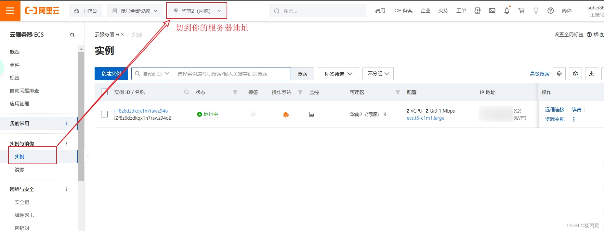
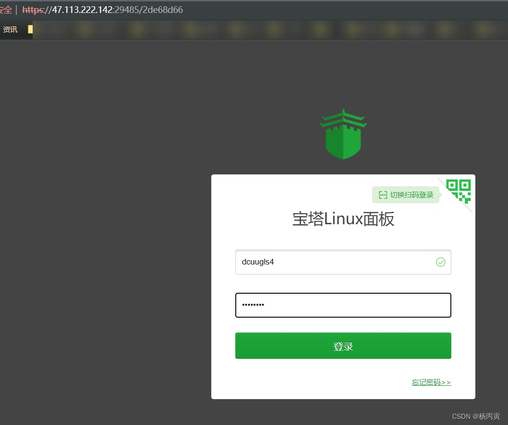

手把手教你阿里云服务器的购买及环境搭建
1.服务器相关
程序员都需要一个自己的服务器!
- 用于发布自己的网站和项目！
- 用于操作系统的练习！
- 将自己的远程仓库、远程数据库、远程tomcat..... 搭建在服务器上！
- 用于Linux进行任意的环境部署操作！
服务器如何购买
如果你没超过24岁，你还可以买到免费的练习学生机，具体方法：阿里云搜索学生机即可。
链接地址：https://developer.aliyun.com/plan/student
具体自行按步骤操作执行，即可免费获得一台自己的服务器。
买完服务器之后，按照如下步骤链接服务器！
2.阿里云服务器使用xshell连接
下载安装xmanager软件到本地电脑。
- 下载地址：https://www.ghxi.com/xmanagerpowersuite.html
- 也可以自行百度官网下载！
阿里云服务器使用xshell连接
- 登录阿里云控制台。找到实例，切到阿里云服务器所在地址。

- 复制你的公网IP，将来远程连接时需要使用；设置远程连接的密码，用户名默认root（中间需要使用支付宝认证，只需要使用手机支付宝扫描一下二维码即可）。
注意：重置哪个服务器的密码，就选哪个，不要多选择！！！！
- 启动xshll远程连接阿里云服务器！
-
点击xshell文件-新建；
-
输入基本信息：名称（自己定义名字即可）主机（公网IP）连接，点击连接即可，此时会让你输入密码（密码就是上面重置的实例密码）
- 至此xshell连接阿里云服务器完毕！
3.搭建环境
1. 傻瓜式（宝塔面板）
-
Centos安装命令：
yum install -y wget && wget -O install.sh https://download.bt.cn/install/install_6.0.sh && sh install.sh 12f2c1d72
-
在安装期间，可以进行，按照教程进行端口打开。以下主机商必看（开端口教程，不开不能用）：
-
个人使用的是阿里云，需放行如下端口：
- 29485端口
- 8888端口
- 20 、21、 39000-40000端口（linux 系统 ）,3000-4000（windows系统）
- 22 (SSH)
- 80、443（网站及SSL）
- 3306 （数据库远程连接）
- 888 （phpmyadmin）
- 下载完毕之后，就可以得到一个地址：宝塔的管理面板！
- 登录外网地址，输入用户名，密码：

自定义安装服务器环境
- 可以安装个人的MySQL、nginx、tomcat、apache、redis版本即可。
- 若安装错误，即可点击右边的等待安装按钮，进入消息，选择要删除的软件，进行删除，重新安装，若安装完成，点击卸载或设置即可。
一键部署应用
端口开启
项目放入网站进行访问！
- 比如tomcat 就直接放到 webapps 目录下！
- 特殊的网站：开源项目，就按照个人操作来！
- 注：上传文件尽量使用 XFTP！
网站如果访问测试失败，一定是防火墙出问题了，（原因①：Linux服务器，原因②：阿里云安全组面板！）
- war 直接丢到 tomcat 即可；
- jar 直接用 java -jar 执行即可访问；
2.命令式(原生)
具体参考：从零入门Linux！